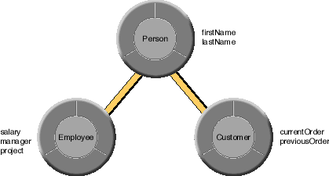

Table of Contents
Table of Contents  Next Section
Table of Contents
Next Section
Table of Contents  Previous Section
Previous Section
In object-oriented programming, when a subclass inherits from a superclass, the instantiation of the subclass implies that all the superclass' data is available for use by the subclass. When you instantiate objects of a subclass from database data, all database tables that contain the data held in each class (whether subclass or superclass) must be accessed so that the data can be retrieved and put in the appropriate enterprise objects.
Even in the simplest scenario in which there is a one-to-one mapping between a single database table and an enterprise object, the database and the enterprise objects instantiated from its data have no knowledge of each other. Their mapping is determined by an EOModel. Likewise, inheritance relationships between enterprise objects and the mapping of those relationships onto a database are also managed by an EOModel.
Note: Enterprise Objects Framework doesn't support mapping inheritance hierarchies across tables in separate databases. Instead, you can set up groups of objects connected by cross-database relationships, where related objects forward messages to each other.
Based on these data requirements, you might design a class hierarchy that has a Person class, and Employee and Customer subclasses. As subclasses of Person, Employee and Customer inherit Person's attributes (name and address), but they also implement attributes and behaviors that are specific to their classes.

Figure 27. Class Hierarchy
In addition to designing your class hierarchy, you need to decide how to structure your database so that when objects of the classes are instantiated, the appropriate data is retrieved. Some of the issues you need to weigh in deciding on an approach are:
When a class hierarchy is mapped onto a relational database, data is accessed in two different ways: By fetching just the leaves (for example, just Employee or Customer), and by fetching at the root (Person) to get instances of all levels of the class hierarchy (Employees and Customers).
While deep class hierarchies can be a useful technique in object-oriented programming, you should try to avoid them for enterprise objects. When you attempt to map a deep class hierarchy onto a relational database, the result is likely to be poor performance and a database that's difficult to maintain.
Enterprise Objects Framework supports the three primary approaches for mapping inheritance hierarchies to database tables:
Figure 28. Vertical Inheritance Mapping
This method of storage directly reflects the class hierarchy. If an object of the Employee class is retrieved, data for the Employee's Person attributes must be fetched along with Employee data. The relationship between Employee and Person is resolved through a join to give Employee access to its Person data. This is also true for Customer.
Figure 29. Horizontal Inheritance Mapping
This technique entails the same fetching pattern as vertical mapping, except that no joins are performed.
This approach works well for deep class hierarchies, as long as the fetch occurs against the leaves of the class hierarchy (Employee and Customer) rather than against the root (Person). In the case of a deep fetch, it's more efficient than vertical mapping (since no joins are performed). It's the most efficient approach, if you only fetch instances of one leaf subclass at a time.
Figure 30. Single Table Mapping
Each sub-entity maps to the same table and contains attributes only for the properties that are relevant for that class.
Also, if you have a lot of data, this approach can actually be less efficient than horizontal mapping since with single table mapping you have to search the entire table to find the rows needed to instantiate objects of a particular type. (Horizontal mapping is only more efficient if your application just fetches one type of leaf object at a time (instances of a particular subclass).
| Fetches from Leaves | Fetches from Root | |
| Vertical Mapping | 1 fetch using join | n fetches using join |
| Horizontal Mapping | 1 fetch | n fetches |
| Single Table Mapping | 1 fetch | 1 fetch |
In the table, "n" represents the number of entities involved in a deep fetch. For example, when you perform a deep fetch against Person in the Person, Customer, Employee class hierarchy, n equals 3.
Fetching and Inheritance
Once you've designed your class hierarchy and set up your EOModel to support that class hierarchy, you can use this information to fetch objects of the desired type. For example, you might want to just fetch Person objects, not Customer or Employee objects-or you might want to fetch all Person objects, including Customers and Employees. Delegation Hooks for Optimizing Inheritance
EOModelGroup includes delegate methods that you can use to exercise more fine-grained control over inheritance. These include: Java Limitation With Ambiguous To-One Relationships
In both Java and Objective-C you can have to-many relationships to instances of both leaf and non-leaf subclasses in your class hierarchy. For example, the SoftballTeam entity can have a to-many relationship to Person or just the Employee entity (as in a company only team).
The second workaround is to implement the ambiguous to-one relationship as a to-many, similar to dealing with an optional to-one relationship above. "Use a To-Many Relationship"
Table of Contents Next Section